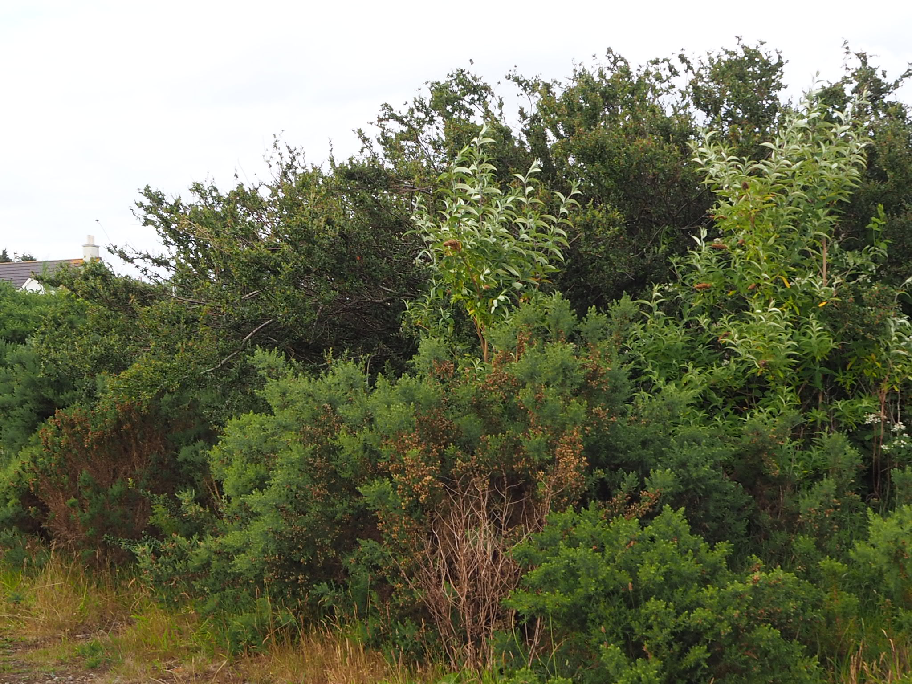
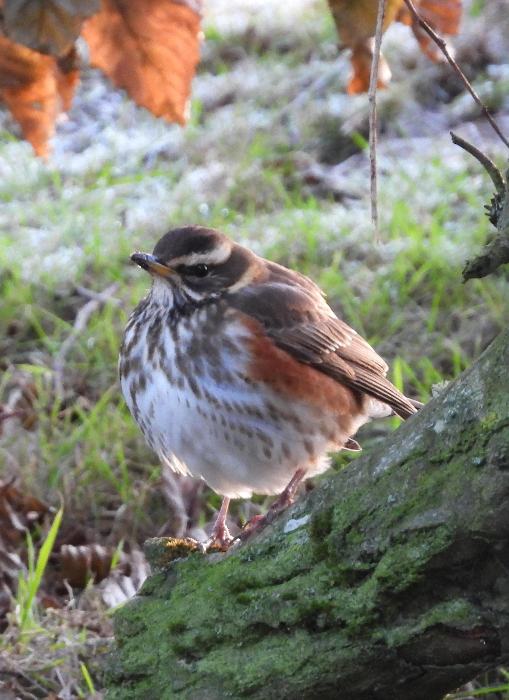
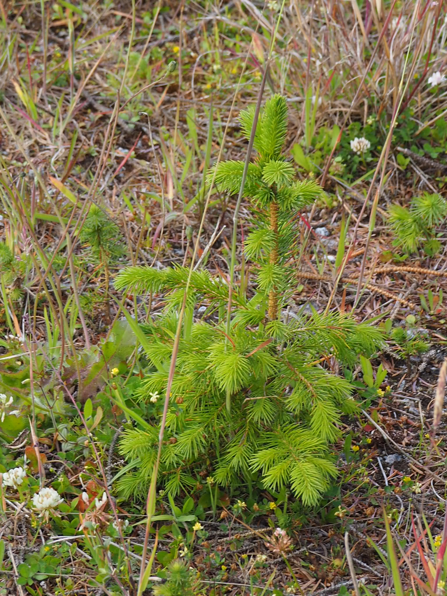
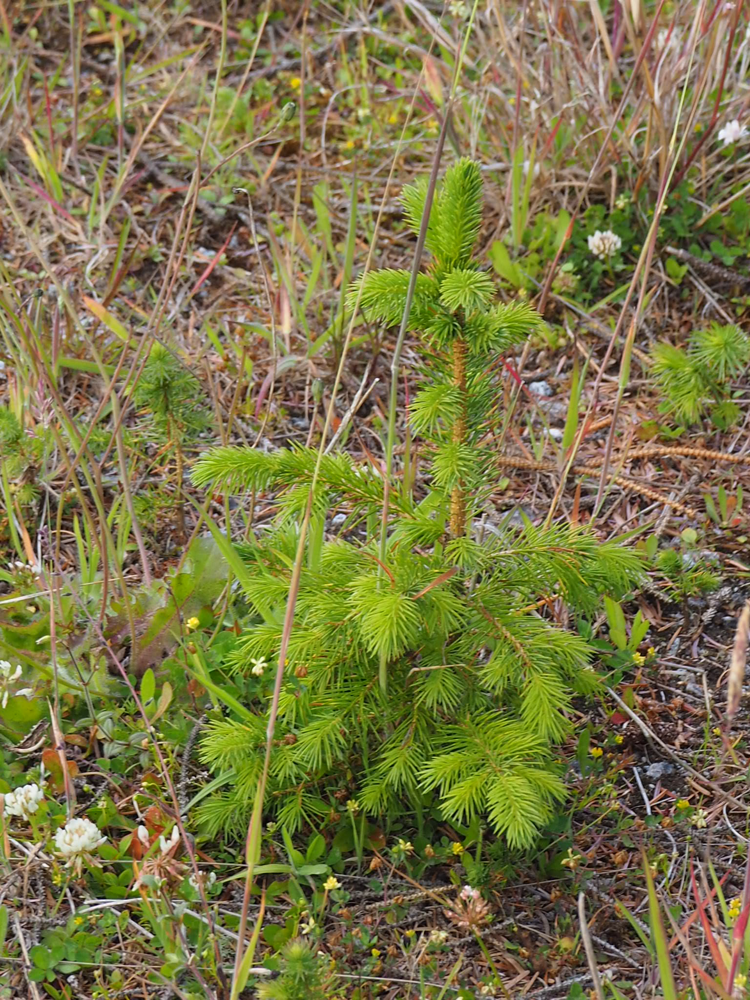
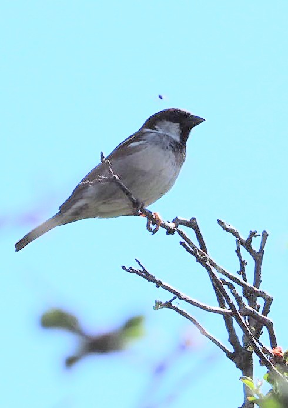
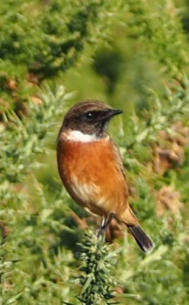
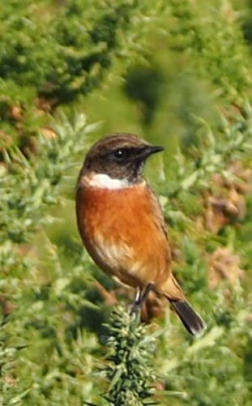
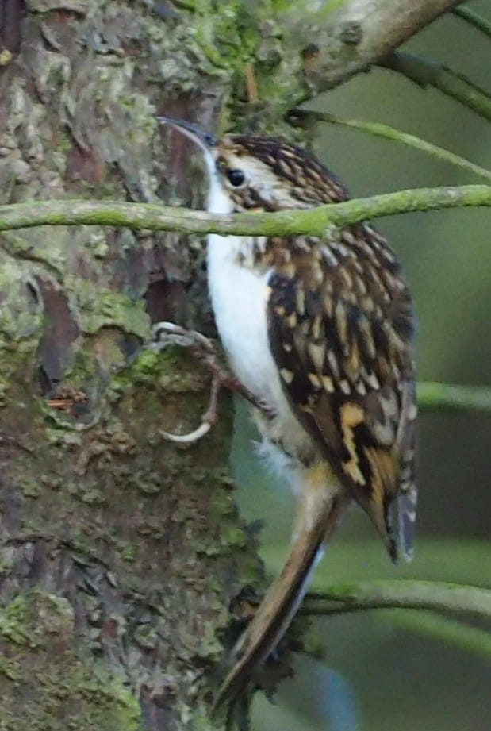
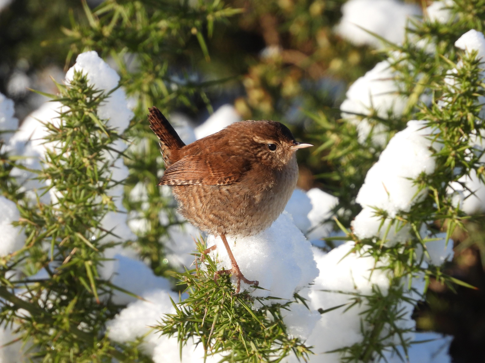

This is an attempt (in progress) to list most of the species living on or
visiting the Corrunna Moor and provide their photographs taken on the moor.
The list is, of course, far from complete. Cataloguing plants is somehow a
boring task, while taking pictures of some animals is challenging. Beware that
my identification of species can be inaccurate and pictures are often of not so
good quality.
Alder
Along the border with Corunna Road there is a group of young
alders growing quickly and expanding into a small woodland.

Ant
There are several species of ants on the moor. The picture
below was taken on the corner of the tarmac path.

Bee
With the bees in global decline, seeing one is like a step to the old good past. There must be
a few kinds of bees on the moor, but I don't dare to try to identify them. I haven't found
a nest yet.

Bird vetch
One of many plants flowering in the summer.
Blackberry
There are plenty of bramble bushes almost everywhere on the moor.
They produce a lot of fruit which is ripe in the second half of
the summer. Sweet when very ripe and plentiful.
Blackbird
Ubiquitous on the moor and in the area. Their singing is distinctive
in the spring and summer. They become almost quiet in the autumn and winter,
when they only produce a slightly chirping sounds. The picture below
shows a young one. The second picture shows a
leucistic blackbird.


Blue tit
Very common on most parts of the moor.


Buddleia
Grows mostly along the path of the moor close to Corunna Road
and together with alders form a small woodland full of birds
and frequently visited by deer. Flowering in most of summer
attracts butterflies, bumblebees and other insects feeding
on nectar.
Bumblebee
Very common on most parts of the moor with flowering plants.
Buzzard
I don't think they live on the moor but can be sometimes seen on the skies above.

Caterpillar
There are many caterpillars on the moor and they are larvae of moths. The one on
the pictures is probably
ruby tiger . The pictures were taken in October.


Common blue
One of several kinds of butterflies. Not so common to spot on the moor.

Common chaffinch
The easiest place to see a chaffinch is the woodland between the moor
and the golf course. Either high on the spruces or on the bordering
whitebeams. Also, like most of the birds on the moor it can be seen
on the cotoneaster.

Cotoneaster
A distinctive bush in the middle of the moor close to the end
of the concrete slab path. Flowering in the summer and full of beautiful
red fruits throughout the autumn. Many of the pictures of birds
on this website were taken there.


Creeping thistle
An ubiquitous weed on the moor.

Curly dock

Dark green fritillary
Not so common butterfly.

Dunnock
Resembling a small song thrush it is not so easy to spot. I am not even sure whether
it lives here or I was just lucky and saw it when it was passing by during its
migration.

Feral pigeon
Very common on the moor and around. Seen mostly when flying or
feeding on grass or lawns, sometimes on rooftops.
Frequency:

Fox
Occasional visitors, especially in winter. The picture below was taken on March 25, 2022.
Interestingly, my cats were not scared of the fox and the fox were not scared of them (and
of me too). They seem to chase each other.
Fox-and-cubs

Geese
Not resident of the moor but can be spotted migrating. What always confused me in the autumn
was that many flocks of geese were heading North rather than South. One of the reasons is that
there may be geese coming here for winter from Norway. However, it is probably more complicated.
After a bit of investigating
I learned that before the actual migration the geese explore different feeding grounds and
that is why they are seen to fly in the "wrong" direction.

Goldcrest
What is the evolutionary benefit of having such a grumpy face? A goldcrest is restless small bird, the
size of a blue tit. It took me about twenty minutes to make just a few acceptable shots. It was not
bothered much by my presence, just jumping from one branch of gorse to another every second.

Goldfinch
One of the most beautiful birds on the moor. The easiest place to spot them are the
tops of spruces in the end of summer. Flocks of goldfinches feed on ripe cones (see
the last photo).


Gorse
The defining plant of the moor covering most of its area.
It is spectacular in the blooming season in the spring and summer
(see photo). Home to hedgehogs and rodents as well as to deer, which
with an amazing skill can jump through the thorny bush.

Grass (many species)
I don't even attempt to list all the grass species. Most of it is
spectacular in the summer. Below just a glimpse on its diversity.


Great tit
A resident of the moor that is quite hard to photograph. The picture below was taken on the
feeder in my garden.

Hedgehog
A common nocturnal mammal on the moor, relatively easy to spot in summer early nights.

Kestrel
I am not sure kestrels nest on the moor, however, they hunt there
from time to time. Often being chased away by magpies or crows.

Magpie
Easy recognisable for they look and the distinctive cawing. They seem to be present on
the moor, especially in the higher parts of the spruces, almost all the time.
Surprisingly difficult to photograph.


Meadow brown
Yet another not so frequently seen butterfly. I saw it once only. The picture
was taken on June 25, 2022.

Meadow froghopper
If you see a "spit" on a stem of a thistle of a grass then it is a nest of a small
insect.

Pheasant
Visitors from the golf course. The female on the photo was spotted in the woodland.

Pellucid fly
I have seen this insect a few times only. Certainly not as common as bumblebee or
a wasp.

Peacock butterfly
A very common butterfly, frequently seen on the flowers of buddleia.

Pigeon
There are a few kinds of pigeons on the moor. The one on the picture below
is a wood pigeon and they nest high on the spruces. Earlier they attempted
to nest on the trees in the gardens adjacent to the moor but the presence
of cats chased them away to the woodland.

Red admiral
Another common butterfly seen often on the buddleia flowers.

Redwing (near threatened)
A small bird of "near threatened" conservation status. Visits us mostly in winter, probably
from Norway. This year (2022) a large flock (see the third picture) arrived in
December and most of it stayed for three weeks. On arrival they were seen on
the moor and the trees on Corunna Road, while later mostly in the woodland
between the moor and the golf course.



Robin
A very common and iconic bird. They can be seen and heard everywhere on the moor. Quite
friendly to people, often come very close. On the other hand, aggressive towards other
small birds. They produce many different sounds, the most distinctive being something
between clicking or smacking. When you stand near the gorse you can hear it from many places
as robins call each other.


Roe deer
A frequent visitor that sometimes stays on the moor for days. In the early summer can be seen
together with the young. The way and speed with which they can go through the gorse is incredible.

Rook
There are plenty of rooks living mostly in the woodland between the moor
and the golf course and in the trees along Corunna Road and further away.

Rowan tree
The most beautiful in September when its fruits are red on the green background of its leaves.

Seagull
We don't really like them in Aberdeen. Nevertheless, then are present on the moor. They nest
on the roofs of houses on Donview on the southern edge of the moor. Not so frequent over the
moor as they used to be.

Sitka spruce
The 166 spruces form one of the most distinctive parts
of the area, the woodland between the moor and the golf course.
Home and feeding place to many birds and, allegedly, a red
squirrel. The picture on the left shows the biggest tree
which is also the easiest place to spot swarms of goldfinches
feeding on ripe cones in the end of summer. The picture on the
right is a very young tree that will hopefully take over more
land.
 

Slime mold
One of the most interesting creatures on the planet.
What you see on this picture is a one cell organism that can actually move, using its pseudopods,
in search for food.
Snowberry
A bush at the end of the concrete slab path. A shelter for many small birds together with
the neighbouring cotoneaster form a nice bird sanctuary.

Sparrow
The bird on the picture is a house sparrow. I suspect that there may also be tree sparrows on the moor,
but I haven't yet verify it. I only recently learned about the latter species and it is interesting
to know whether they live on the moor.

Squirrel
What you see on the picture is a strange feeder installed by people from
Saving Scotland's Red Squirrels.
It is a squirrel feeder and in order to get to the corn a squirrel has to lift the
lid. Underneath the lid is a piece of gluing tape to catch squirrels fur. This is
how they know that a squirrel was there. I check it frequently and as far as I can
tell, there wasn't. However, I saw one a few years ago crossing my garden.
Stinking willie
Supposedly a very invasive weed.

Stonechat
To the best of my knowledge, a couple of stonechats were only visiting for a day
in October. The pictures below were taken on October 18, 2022 and this is the only
day I saw these beautiful birds. They were as easy to photograph as robins, showing
almost no fear even when I approached them very closely.
 


Tatar maple
A neighbour of the rowan tree at the entrance to the moor. Keeps its beautiful leaves
long into autumn.

Thistle
It is Scotland after all...

Thrush
The poetry of singing birds. The moor has a nice population of
song thrushes.
However, I also suspect that we may have a few
mistle thrushes.
I find hard to identify them properly, so at the moment, I assume that all of them
are song thrushes.


Tiger moth (protected)
Our greatest treasure. The only protected species I could identify so far. Incredibly beautiful.
No words are needed... The picture was taken on July 5, 2022.

Treecreeper
As the name suggest this small bird creeps up the trees. In search of food under the folds
of the bark it climb up a tree, then flies down and repeats the climbing. Not shy at all
it is a pleasure to watch from a relatively close distance.


Wasp
The pictures below shows two nests under the roof of a garage. I also saw a nest in the
ground. A very common and not so liked insect.

Water rail
Quite rare in this part of Scotland. A few birds (I saw three) visited the moor in November and
stayed for a few days. As the name suggests its natural habitats are banks of rivers and lakes,
that makes it an uncommon visitor. Walks in search for food and when scared runs with the head
down. That is why initially I thought it was a wounded song thrush.

Whitethroat
Yet another small bird contributing to the symphony of the moor.

Wren
Very common tiny inhabitant of the moor. Easily seen in the winter months. Just stand in the gorse
and within a few minutes either a wren or a robin will pop up on a top branch not far from you.
You will hear them before they make themselves visible.


Yellowhammer
I saw this bird just once on the 3rd of August 2022. The picture I took was not good and I
forgot about it. A few months later, when revised the collection of photographs, I realised
it was a yellowhammer. The pictures below were enhanced to emphasise the characteristic features.


{kind=link}
{kind=link}
{kind=link}
{kind=link}
{kind=link}
{kind=link}
{kind=link}
{kind=link}
{kind=link}
{kind=link}
{kind=link}
{kind=link}
{kind=link}
{kind=link}
{kind=link}
{kind=link}
{kind=link}
{kind=link}
{kind=link}
{kind=link}